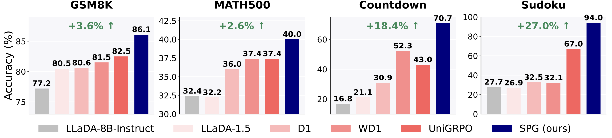
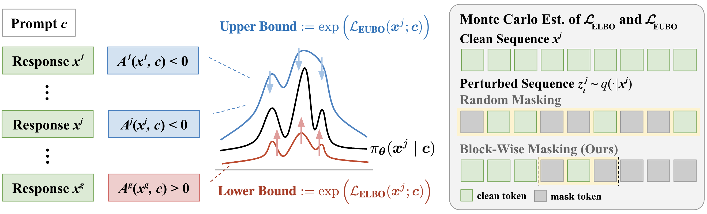
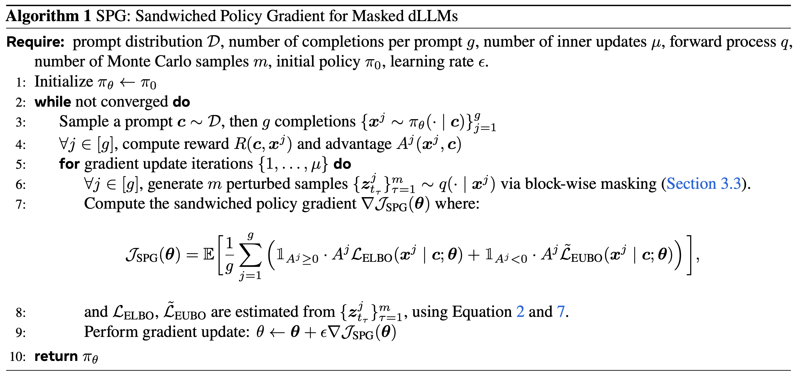
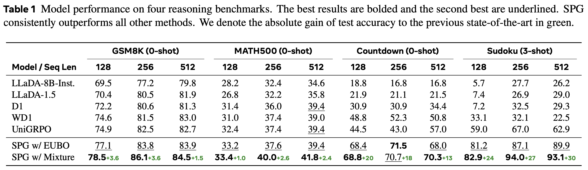
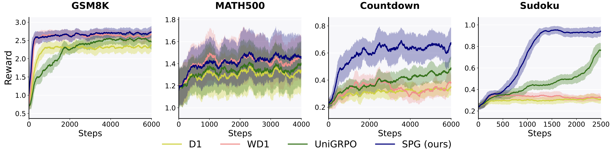
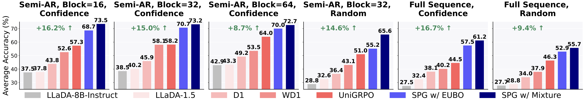

Diffusion large language models (dLLMs) are emerging as an efficient alternative to autoregressive models due to their ability to decode multiple tokens in parallel. However, aligning dLLMs with human preferences or task-specific rewards via reinforcement learning (RL) is challenging because their intractable log-likelihood precludes the direct application of standard policy gradient methods.
While prior work uses surrogates like the evidence lower bound (ELBO), these one-sided approximations can introduce significant policy gradient bias. To address this, we propose the Sandwiched Policy Gradient (SPG) that leverages both an upper and a lower bound of the true log-likelihood.
Experiments show that SPG significantly outperforms baselines based on ELBO or one-step estimation. Specifically, SPG improves the accuracy over state-of-the-art RL methods for dLLMs by 3.6% in GSM8K, 2.6% in MATH500, 18.4% in Countdown and 27.0% in Sudoku.

The Sandwiched Policy Gradient algorithm aims to address a critical challenge of applying RL to dLLMs: the intractability of the log-likelihood. SPG introduces a novel approach to compute a more robust and less biased policy gradient via:

The SPG algorithm operates by alternating between sampling a group of trajectories and updating the policy. The key innovation is the use of both upper and lower bounds in the policy gradient estimation, which provides a more accurate signal than ELBO-based or one-step estimation-based RL methods.

SPG consistently achieve significant improvements over the baselines across diverse reasoning benchmarks, including mathematical reasoning (GSM8K, MATH500) and logical reasoning (Countdown, Sudoku). Specifically, SPG improves the accuracy over the previous state-of-the-art by 3.6% in GSM8K, 2.6% in MATH500, 18.4% in Countdown and 27.0% in Sudoku.

We analyze the reward dynamics throughout training. SPG shows a rapid and steady increase in reward over the optimization steps, further demonstrating its efficiency and robustness.

To assess the robustness of SPG using the block-wise masking strategy, we conduct ablation studies on different inference strategies, including different combinations of decoding orders (i.e., semi-autoregressive (semi-AR) decoding with varying block sizes and full sequence decoding) and unmasking approaches (i.e., confidence-based and random unmasking). Despite being trained under confidence-based semi-AR decoding, SPG consistently outperforms all baselines by a substantial margin across all inference strategies, demonstrating its robustness and strong generalizability.

Please refer to the full paper for more results and ablations.
If you find SPG useful in your research, please cite our paper:
@article{wang2025spg,
title={SPG: Sandwiched Policy Gradient for Masked Diffusion Language Models},
author={Wang, Chenyu and Rashidinejad, Paria and Su, DiJia and Jiang, Song and Wang, Sid and Zhao, Siyan and Zhou, Cai and Shen, Shannon Zejiang and Chen, Feiyu and Jaakkola, Tommi and Tian, Yuandong and Liu, Bo},
journal={arXiv preprint arXiv:2510.09541},
year={2025}
}